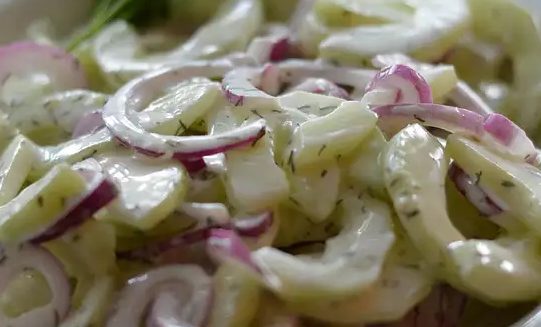

Best-Ever Cucumber Dill Salad

Description:
Just experimenting one day and came up with a yummy, fresh twist on an old
recipe.
Ingredients:
- ½ cucumber, very thinly sliced
- salt and ground black pepper to taste
- ¼ cup sour cream, or to taste
- ¼ cup vinegar, or more to taste
- ¼ cup plain yogurt
- 2 tablespoons mayonnaise
- ½ lime, juiced
- 2 teaspoons white sugar
- 1 teaspoon dill
- ½ red onion, thinly sliced
- ½ stalk celery, thinly sliced
Steps:
-
Place cucumber slices in a colander. Generously sprinkle salt over
cucumber; let sit until water starts to bead on the slices, about 10
minutes. Drain water from cucumber slices.
-
Whisk sour cream, vinegar, yogurt, mayonnaise, lime juice, sugar, and
dill together in a large bowl until dressing is smooth. Mix cucumber,
onion, and celery into dressing until evenly coated; season with salt
and pepper.
-
Preheat an outdoor grill for medium heat and lightly oil the grate.
Back to front page